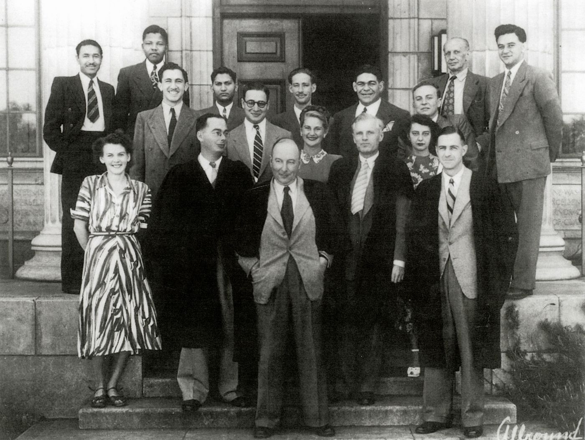

A fighter against racial oppression in South Africa
Nelson Mandela (top row, second from left) on the steps of Wits University.
| DATE | EVENT |
|---|---|
| 1918 | Born Rolihlahla Mandela at Mvezo in the Transkei |
| 1925 | Attends primary school near Qunu (receives the name ‘Nelson’ from a teacher) |
| 1930 | His Father dies.He Entrusted to Thembu Regent Jongintaba Dalindyebo at the age of 12 |
| 1934-1937 | In 1934 undergoes initiation; In 1937 Attends Clarkebury Boarding Institute in Engcobo |
| 1939 | He enrols at the University College of Fort Hare, in Alice . |
| 1940 | expelled from university |
| 1941 | becomes a mine security officer; starts articles at the law firm Witkin, Sidelsky & Eidelman |
| 1942 | He Completes BA through the University of South Africa (UNISA) and then Begins to attend African National Congress (ANC) meetings informally |
| 1940 | expelled from university |
| 1943 | He Graduates with BA from Fort Hare; Enrols for an LLB at Wits University |
| 1944 | He Co-founds the ANC Youth League (ANCYL) and marries Evelyn Ntoko Mase |
| 1948-1951 | He was elected national secretary of the ANCYL and then becomes president in 1951 |
| 1952 | Defiance Campaign begins; He was arrested and charged for violating the Suppression of Communism Act; Elected Transvaal ANC President; Convicted with J.S Moroka, Walter Sisulu and 17 others under the Suppression of Communism Act; Sentenced to nine months imprisonment with hard labour, suspended for two years; Elected first of ANC deputy presidents; Opens law firm with Oliver Tambo - the only black law firm in Johannesburg in the 1950s |
| 1953 | Devises the M-Plan for the ANC’s future underground operations |
| 1955 | Watches as the Congress of the People at Kliptown adopts the Freedom Charter |
| 1956 | Arrested and later joins 155 others on trial for treason. All are acquitted by 29 March 1961 |
| 1960 -26 March | He join Sharpeville Massacre |
| 1960-30 March | A State of Emergency is imposed and he is among thousands detained |
| 1960-30 March | The ANC is banned |
| 1960 | Goes underground; Umkhonto weSizwe (MK) is formed |
| 1960-11 January | Leaves the country for military training and to garner support for the ANC |
| 1962-23 July | Returns to South Africa |
| 1962-23 August | Arrested near Howick in KwaZulu-Natal |
| 1962-7 November | Sentenced to five years in prison for incitement and leaving the country without a passport |
| 1963-27 May | Sent to Robben Island |
| 1963-12 June | Returned to Pretoria Local Prison |
| 1963-9 October | Appears in court for the first time in what becomes known as the Rivonia Trial, with Walter Sisulu, Denis Goldberg, Govan Mbeki, Ahmed Kathrada, Lionel 'Rusty' Bernstein, Raymond Mhlaba, James Kantor, Elias Motsoaledi and Andrew Mlangeni |
| 1963-3 December | Pleads not guilty to sabotage in the Rivonia Trial |
| 1964-4 June | James Kantor discharged and released |
| 1964-12 June | All except Rusty Bernstein are convicted and sentenced to life |
| 1964-13 June | Arrives on Robben Island |
| 1969 -13 July | Thembekile is killed in a car accident |
| 1982-13 March | Mandela, Sisulu, Raymond Mhlaba and Andrew Mlangeni and later Ahmed Kathrada are sent to Pollsmoor Prison |
| 1985 | Rejects, through his daughter, Zindzi, South African President PW Botha's offer to release him if he renounces violence |
| 1988-7 December | Moved to Victor Verster Prison in Paarl where he is held for 14 months in a cottage |
| 1990-7 Decembre | ANC is unbanned |
| 1990-2 February | Released |
| 1988-2 March | Elected ANC Deputy president |
| 1993-10 December | Awarded the Nobel Peace Prize with President FW de Klerk |
| 1994-27 Avril | Votes for the first time in his life |
| 1994-9 May | Elected by Parliament as first president of a democratic South Africa |
| 1994-10 May | Inaugurated as President of the Republic of South Africa |
| 1994-14 December | Launches his autobiography Long Walk to Freedom |
| 1995 | Establishes the Nelson Mandela Children's Fund |
| 1999 | Steps down after one term as President, establishes the Nelson Mandela Foundation |
| 2001 | Diagnosed with prostate cancer |
| 2003 | Establishes the Mandela Rhodes Foundation |
| 2004 | Announces that he will be stepping down from public life |
| 2007 | Attends the installation of his grandson Mandla as chief of the Mvezo Traditional Council |
| 2008-27 June | Asks future generations to continue the fight for social justice |
| 2009 | Votes for the fourth time in his life; Attends the inauguration of President Jacob Zuma on 9 May and witnesses Zuma's first State of the Nation address; Turns 91 |
| 2010-12 October | His second book Conversations with Myself is published |
| 2011-27 June | His book Nelson Mandela By Himself: The Authorised Book of Quotations is launched |
| 2013-1 September | Passes away at home in Johannesburg |
“For to be free is not merely to cast off one’s chains, but to live in a way that respects and enhances the freedom of others.I am fundamentally an optimist. Whether that comes from nature or nurture, I cannot say. Part of being optimistic is keeping one’s head pointed toward the sun, one’s feet moving forward. There were many dark moments when my faith in humanity was sorely tested, but I would not and could not give myself up to despair. That way lays defeat and death.” Nilson Mandella

If you have time, you should read more about this incredible human being on his wikipidia page